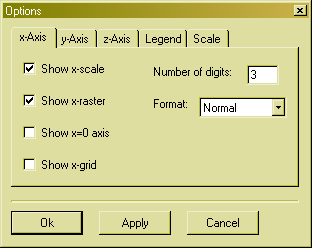
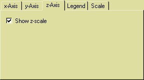
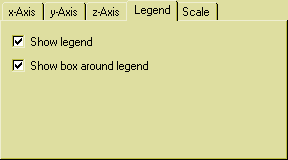
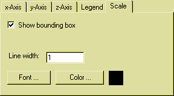

Edit drawing options

In this dialogbox you can edit all drawing options. There are five tabs where you can change settings.
x-Axis
Here you can change options concerning the x-scale of the plot. If you check the Show x-scale checkbox, the x-scale will be drawn, e.g. the numbers that represent x-positions. On the right you can select the format of this scale-numbers. You can enter how many digits should be displayed and which number format should be used. There are three formats, Normal, Scientific and Fixedpoint. The Normal format switches between Scientific or Fixedpoint depending on the number. Scientific uses an exponent number representation like 1.34E5. Fixedpoint never shows an exponent.
If you check the Show x-raster checkbox, rasterlines will be drawn on the x-scale. If you check the Show x=0 axis checkbox the x=0 axis will be drawn. If you check the Show x-grid checkbox, x-gridlines will be drawn.
y-Axis
Here you can change options concerning the y-scale of the plot. The fields are the same as in the above x-Axis section.
z-Axis

Here you can select if a z-scale should be drawn.
Legend

Here you can select if to draw a legend and if to draw a border around the legend.
Scale

Here you can select if the plotting area should be displayed inside a bounding box. You can also change the font, color and line-width of the whole scale.